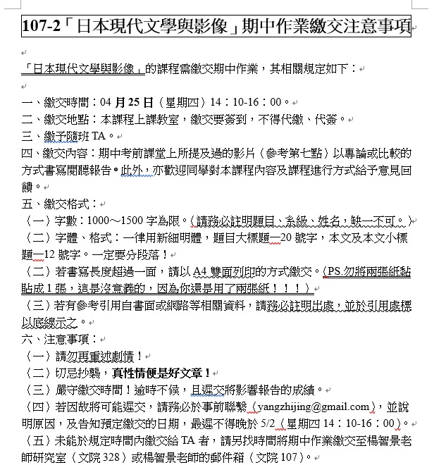

各位同學好：
107-2「日本現代文學與影像」需繳交期末作業，提醒事項如下：
一、繳交時間：06月20日（星期四）14：10-15：00。也可以提前於6/13課堂上繳交。
二、繳交地點：本課程上課教室，繳交要簽到，不得代繳、代簽。
三、討論對象：
（一）東京小屋的回憶
（二）夕嵐之街櫻之國
（三）黃金風景
（四）人間椅子
（五）SO-far、小飾與陽子、向陽之詩
四、其他注意事項與期中作業時相同，請務必自行參酌。
